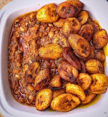

Plantain and beans

How to make Plantain and beans
Let me clarify today’s post for you my lovely readers who have not heard of red red. Red red is simply fried plantains with beans stew. I am guessing the reason for the name is due to the fact that the beans stew is made with palm oil and the plantains are also fried with palm oil. Thus, red red leaves a red hue on plates when served.
Ingredients
- 2 cups Beans
- Palm oil
- Fresh tomatoes and Pepper
- Ripped plantain
- Salt and cube Maggi
- Vegetable oil for frying plantain
- Onions
Steps
- Pick and wash beans. Set to cook for 5min then drain water and continue to cook with a fresh water.
- While the beans is still cooking, fry plantain and set aside. Then bend pepper + tomatoes+onions+ crafish
- When the beans is done, heat up Palm oil and fry the blended ingredients, fry for 5min then add salt and seasoning cub and stir well. Pour the cooked beans in and turn with a wooden spoon until it's well Incorporated.
- Serve with fried plantain
- Enjoy!